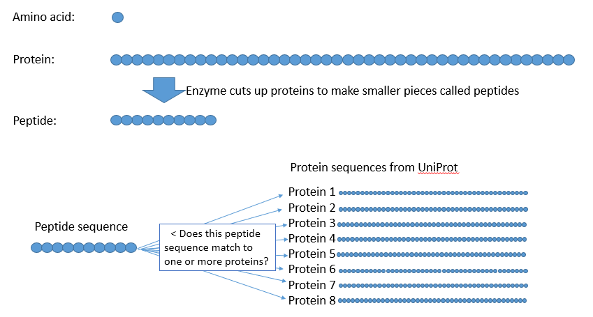
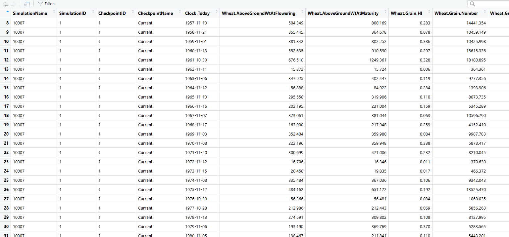

Data School ORIGINAL

Anthony Nadelko
Machine Learning Evapotranspiration
I am a Research Technician in Soil Process & Function with prior experience coding CRBASIC dataloggers, ladder logic PLC’s and C+ microcontrollers. My previous work pattern involved data visualisation and analysis in Excel, further processing in open-source software, then presenting results in Excel graphs and Word tables.

Emmett Leyne 
A pipeline to OzWheat joy
I am a Research Technician from Agriculture and Food in the Cereal Genomics Program. Before Data School I was primarily in the world of ‘Data Production’ in the molecular biology field working with DNA and RNA. I manage the High Throughput Genomics Facility and am Data Custodian for the OzWheat project. I was self taught in R and Python coding but could only do a small amount.

Eva Zinkovsky 
AgScores Weather Analytics
I started Data School as an Administration Officer for Ag&F’s Program 8 with no real experience in data management but had dabbled ever so slightly in coding. As of the first of July our program merged with Program 7. The new program is called Landscapes and Global Change and I have a new role which will ensure best practice data archiving and management systems for our program. I will also be embedded into projects to provide project, data and analytic support. :)

Fernanda Dreccer
Exposure of wheat to heat across Australia
I am a crop physiologist and crop simulation modeller. I love maths and stats and the quantitative side of biology and genetics. Attending Data School gave me the opportunity to upgrade my skills and interact with people who are more proficient, opening doors to collaboration.

Gordon McLachlan
Automated processing of soil core data.
Data School can teach an old dog new tricks. If I am not away on fieldtrips you can find me processing soil samples in the Butler Laboratory on Black Mountain, ACT. Before Data School I had heard the terms; R, Python, Bowen, Pearcey, ggplot, Data Access Portal & machine learning. I was unable to learn them as was I too busy working to deliver project milestones on time, and balancing work & family life.

I am an analytical chemist from the Molecular Analysis Team in St Lucia, QLD. Our team specializes in proteome analysis, the large scale investigation of proteins. I had some experience with R prior to dataschool but now I am also happy to write in Python and see opportunities to code everywhere!
James Broadbent
Peptide specificity in the UniProt
I am an analytical chemist from the Molecular Analysis Team in St Lucia, QLD. Our team specializes in proteome analysis, the large scale investigation of proteins. I had some experience with R prior to dataschool but now I am also happy to write in Python and see opportunities to code everywhere!

Rosangela Devilla
Using Machine Learning to predict chlorophyll-a for water quality monitoring and management
I’m an Ag&F Experimental Scientist from the Plant & Oil Engineering Group working on the development and application of analytical chemistry methods using mass spectrometry. Previous to Data School, analyses of data were performed using Excel sheets and statistical software packages.

Seija Tuomi
Potassium Isotherms
My name is Seija Tuomi and I work in Ag&F soil chemistry and spectroscopy. Before Data School I made a few attempts at coding R for Infrared Spectroscopy but I have no other experience in coding. Before Data School I spent a lot of time entering data into Excel sheets and analysing the data. What I really needed is a programmable language to streamline all the work systematically.

I am a software engineer working on Agriculture Production SIMulator (APSIM) software. APSIM is a process based model aimed at simulating crop and animal growth at the paddock scale. It outputs customisable reporting data in space delimited text files at daily, month, yearly or crop event time scales. APSIM is used to create simulations that mimic the real world to generate what if scenarios for farming management. Output is compared against real world experiments in order to improve the process based science in the model.
Shaun Verrall
Massive Model Output Visualisation
I am a software engineer working on Agriculture Production SIMulator (APSIM) software. APSIM is a process based model aimed at simulating crop and animal growth at the paddock scale. It outputs customisable reporting data in space delimited text files at daily, month, yearly or crop event time scales. APSIM is used to create simulations that mimic the real world to generate what if scenarios for farming management. Output is compared against real world experiments in order to improve the process based science in the model.

Shokhrukh Jalilov
Predicting linkages between women’s labour and the economy using machine learning
I am an Environmental Economist interested in water-energy-food nexus, agricultural development, water economics and policy, gender issues.

Tracey May
Shiny Biotic
I started with CSIRO in Alice Springs and transferred to the cotton research institute in Narrabri NSW in 2015. Prior to Data School I could adapt existing code in R or Python; I was largely self-taught. Currently, I manage field measurements, calibration and repair of canopy temperature senors; I organise and manage data flows, clean and analyse data to calculate canopy temperature stress hours.

Yingying Yu
Identification of Agricultural Area in the Kamala Catchment, Nepal
I am a Water Resouce Modeler from Land and Water and interested in programming. I learnt basic Matlab at Uni and now would like to switch to Python.